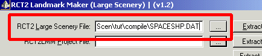
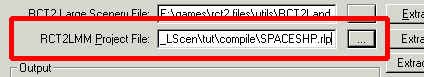
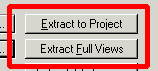
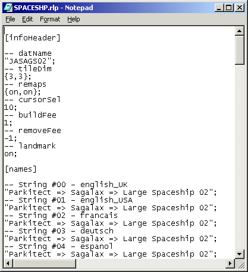
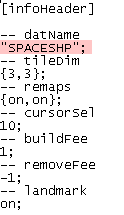
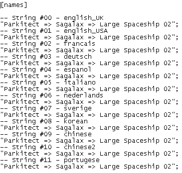
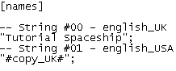
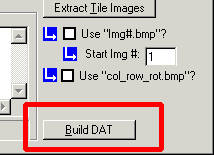
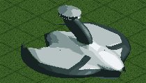

|
RCT2 Landmark Tutorial #1 -- Spaceship |
|
A 3x3 large scenery object made with the full view compile option. |
|
The first tutorial will go over creating a multi-tile scenery object with RCT2 Landmark Maker. Step 1 -- Extract First, if you haven't already, extract all the files into a project folder. You can call it “Tut1” or something like that. After that, open up RCT2 Landmark and enter “Tut1\compile\SPACESHP.DAT” in the “RCT2 Large Scenery File:” text box  Next, in the “RCT2LMM Project File” text box, enter the name of the destination RLP file to extract to. I'm going to use “SPACESHP.RLP”.  Then press the “Extract Full Views” and “Extract to Project” buttons in succession.  Step 2 -- Edit Next go into the compile folder, and open “SPACESHP.RLP” in notepad or another text editor.  In the [infoHeader] section, change “JASAG02” to “SPACESHP”  Next, delete all the [names] except for the two English ones. Change the UK version to "Tutorial Spaceship" and the US version to “#copy_UK#” Before:  After:  After that, delete everything from the “[images_Tile]” section down. These sections can be omitted. You may edit the “view##.bmp” and “menu##.bmp”, but don't change the dimensions of them. Step 3 -- Build After all that, you can go back to RCT2 Landmark. It should have kept the file names you entered in step 1 if you closed the program. If not, re-enter them (you only need to specify the rlp file for builds, the dat name is taken from the data in the infoHeader of the rlp). Now you are ready to build your dat file. At the bottom lefthand corner, you will see the “Build DAT” button. Press it once you have your RLP file specified to process the build.  Note: The build takes longer the more tiles are in your scenery object. Step 4 -- Use in RCT2 Once completed, you can copy the dat file out of your compile folder and into your RCT2 Objdat folder. Load up RCT2, and see the new object in action, after selecting the object into a scenario as you would objects made from other editors. 
|